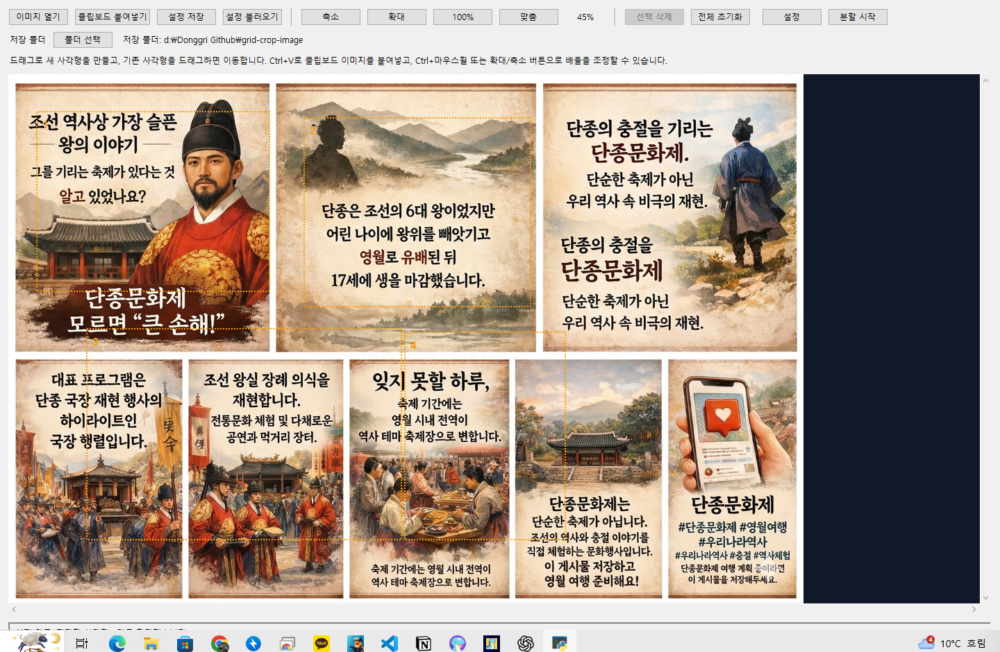
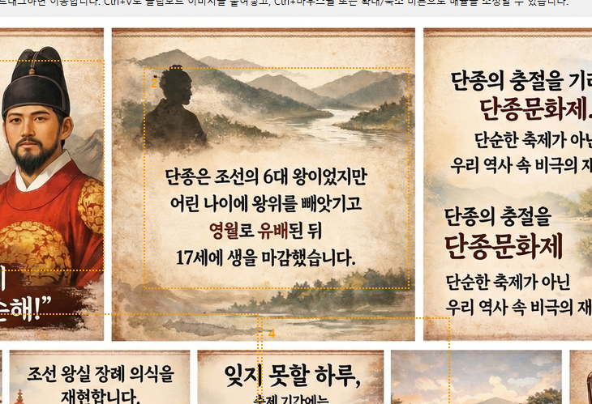

Clipboard
클립보드에서 바로 붙여넣어 작업을 시작할 수 있습니다.
grid-crop-image는 블로그 작성, QA 리포트, 문서 정리에 필요한 스크린샷 자르기 작업을 빠르게 처리하기 위한 Windows용 유틸리티입니다. 복잡한 편집기가 아니라, 반복 작업을 줄여주는 실전 도구라는 점이 핵심입니다.


클립보드에서 바로 붙여넣어 작업을 시작할 수 있습니다.
여러 영역을 동시에 선택해 순차적으로 크롭할 수 있습니다.
반복되는 잘라내기 패턴을 레이아웃으로 저장해 재사용할 수 있습니다.
PyInstaller 기반 EXE 빌드 흐름을 이미 갖고 있습니다.
01 Load
이미지를 열거나 클립보드에서 붙여넣습니다.
02 Select
여러 크롭 영역을 지정합니다.
03 Save
필요한 컷을 저장하거나 레이아웃을 남깁니다.
04 Repeat
같은 작업을 다음 이미지에 빠르게 적용합니다.
자주 쓰는 크롭 방식이 기본 프리셋으로 바로 보여야 합니다.
여러 장의 이미지를 같은 레이아웃으로 잘라내는 기능이 강력한 다음 단계입니다.
실수 복구와 OCR 보조 기능이 들어가면 실제 작업 시간이 더 줄어듭니다.